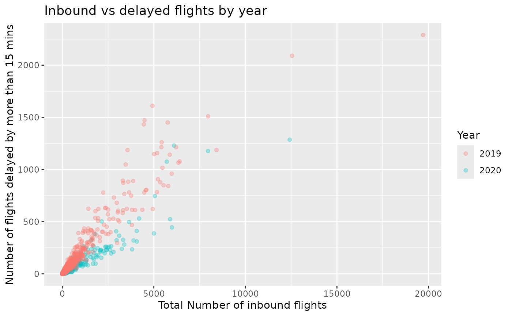

Summary Data counts for airline per carrier per US City.
Format
A data frame with 3351 rows and 21 variables.
- year
Year data collected
- month
Numeric representation of the month
- carrier
Carrier.
- carrier_name
Carrier Name.
- airport
Airport code.
- airport_name
Name of airport.
- arr_flights
Number of flights arriving at airport
- arr_del15
Number of flights more than 15 minutes late
- carrier_ct
Number of flights delayed due to air carrier. (e.g. no crew)
- weather_ct
Number of flights due to weather.
- nas_ct
Number of flights delayed due to National Aviation System (e.g. heavy air traffic).
- security_ct
Number of flights canceled due to a security breach.
- late_aircraft_ct
Number of flights delayed as a result of another flight on the same aircraft delayed
- arr_cancelled
Number of cancelled flights
- arr_diverted
Number of flights that were diverted
- arr_delay
Total time (minutes) of delayed flight.
- carrier_delay
Total time (minutes) of delay due to air carrier
- weather_delay
Total time (minutes) of delay due to inclement weather.
- nas_delay
Total time (minutes) of delay due to National Aviation System.
- security_delay
Total time (minutes) of delay as a result of a security issue .
- late_aircraft_delay
Total time (minutes) of delay flights as a result of a previous flight on the same airplane being late.
Examples
library(ggplot2)
ggplot(airline_delay, aes(arr_flights, arr_del15, color = as.factor(year))) +
geom_point(alpha = 0.3) +
labs(
x = "Total Number of inbound flights",
y = "Number of flights delayed by more than 15 mins",
title = "Inbound vs delayed flights by year",
color = "Year"
)
#> Warning: Removed 8 rows containing missing values (geom_point).
